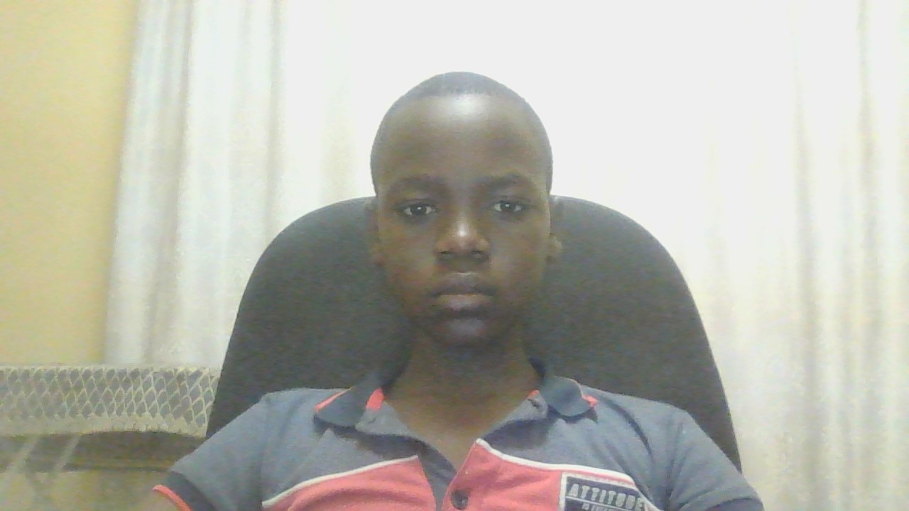

I'm passionate about web development and creating interactive experiences that engaga users. My interests include learning new programming languages, exploring mordern web technologies, and building projects that solve real-world problems.
When I'm not coding, you can find me exploring playing games,reading and watching anime and comics, or working personal projects that challenge my skills and creativity.
I also love playing sports like, Karate, swimming, soccer and hockey